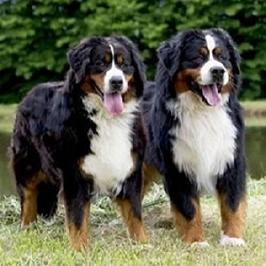
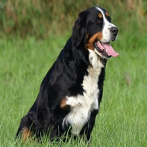
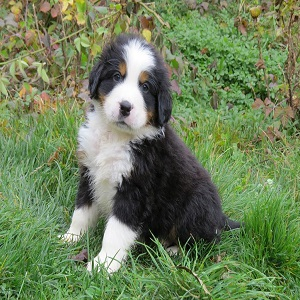

Voici les différents types de Bouvier Bernois que nous possédons !

Bouvier Bernois Male

Bouvier Bernois Femelle

Bouvier Bernois Chiot
Prix moyen d'un Bouvier Bernois :
Male : 1300€ - 1700€
Femelle : 1200€ - 1800€
Chiot : 1200€ - 1900€
Raisons pour adopter un Bouvier Bernois :
Le Bouvier Bernois est un très grand chien qui a tout du gros nounours.
Robuste et rustique, il saura vivre dehors, mais il aime avant tout la compagnie de son maître
et n’apprécie pas d’en être séparé.
Extrêmement polyvalent, c'est un très bon chien de travail
sur les terres agricoles.
Le Bouvier Bernois est connu pour être un chien relativement calme et
amical. Il se montre disponible, docile, doux, attachant et plein de tendresse.
Il n’y a jamais d’agressivité qui se dégage de cette race.